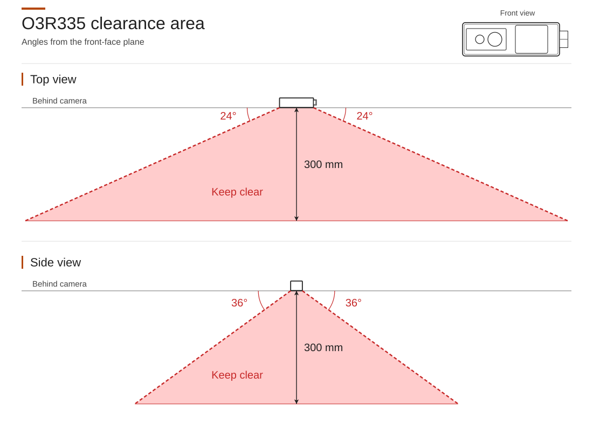
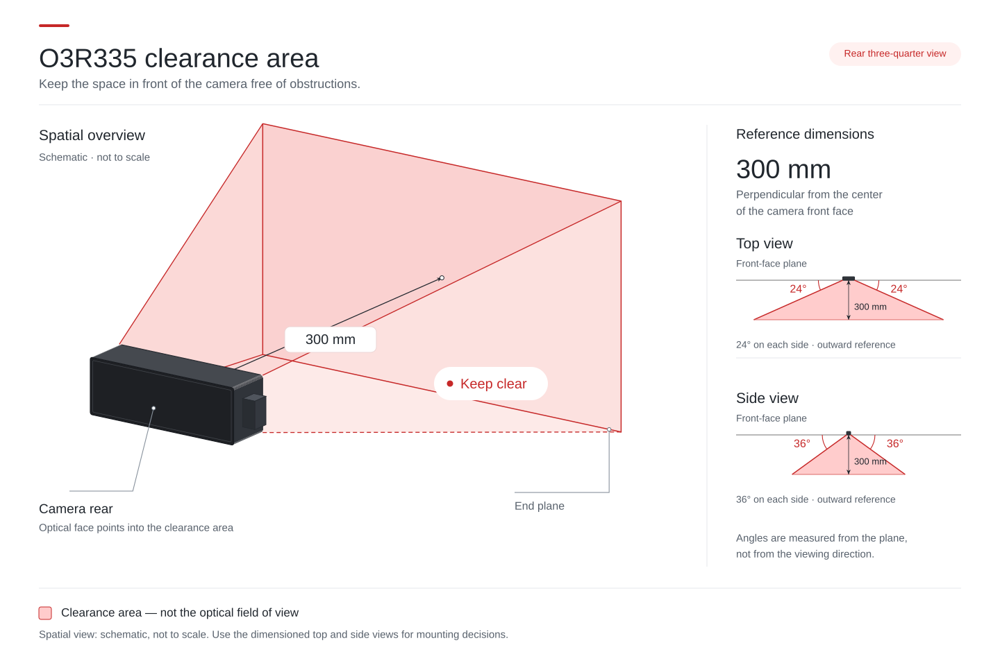
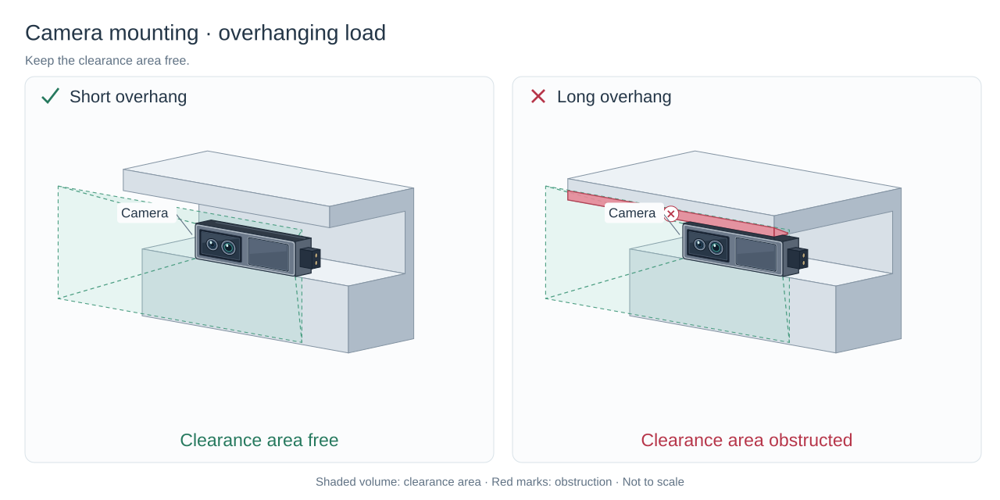
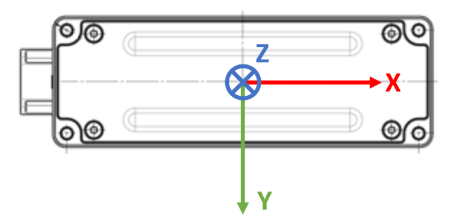
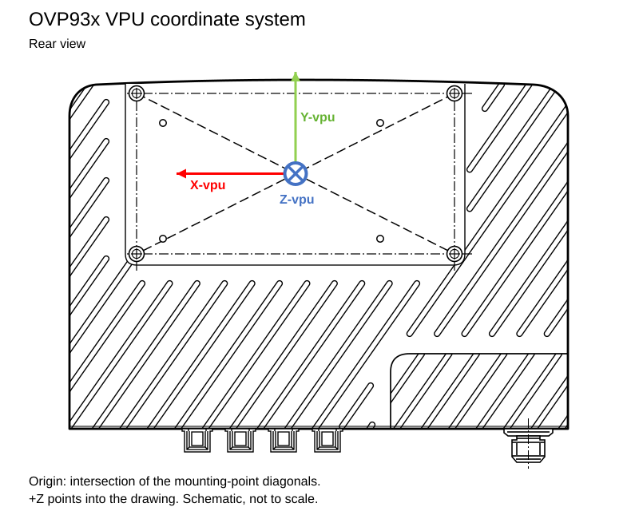

Mechanical integration guide
Start the mounting design with these requirements:
Keep the O3R335 clearance area free of obstructions: 300 mm in front of the camera, with boundaries at 24° in the top view and 36° in the side view, measured from the camera front-face plane.
Provide heat dissipation for the camera heads and VPU. For O3R335, the recommended heat-sink dimensions are 165 × 140 × 2.5 mm.
Clearance area
O3R335
Keep the clearance area free of permanent obstructions, such as the vehicle chassis or overhanging parts. The boundaries start at the edges of the camera housing, without an offset.
View |
Boundary angle from the camera front-face plane |
Perpendicular distance in front of the camera |
|---|---|---|
Top view |
24° on each side |
300 mm |
Side view |
36° on each side |
300 mm |
Measure the angles from the camera front-face plane, not from the viewing direction. The 300 mm distance runs perpendicular from the center of the camera front face to the end plane shown in the dimensioned drawing. The shaded areas represent clearance, not the optical field of view.


O3R335 clearance area in top and side views.
O3R cameras use active illumination with a field of view wider than that of the optics module. Objects obstructing the illumination or lens, especially at close range, can disrupt the signal and cause artifacts that are difficult to filter out.
Temporary occlusions, such as loads carried by the vehicle, can be acceptable depending on the setup but might impact detection performance. For dealing with such occlusions in ODS, refer to the overhanging loads documentation.
Heat dissipation
Camera mounting for heat dissipation
The recommended heat-sink dimensions for O3R335 are 165 × 140 × 2.5 mm.
For the illumination shutdown and restart thresholds, see temperature protection. These thresholds do not establish heat-sink dimensions or mounting requirements.
VPU mounting for heat dissipation
The thermal load of the VPU and cameras needs to be assessed for the intended operating mode and dissipated through the mounting design. This includes:
A mounting bracket for the VPU device (an additional heat sink is usually not necessary).
A combined heat sink and mounting bracket for each O3R camera head.
VPU heat sink
In cases where heat dissipation is insufficient, for example, if air gaps exist between the mounting surfaces, the internal temperatures will exceed normal operation conditions and the CPU and GPU will automatically downclock to cool down.
Super-mode heat dissipation
Thermal testing demonstrated stable full operation of the OVP93x at 40 W in super mode and 40 °C with passive cooling using an aluminum plate measuring 340 × 200 mm and 8 mm thick. These dimensions describe the tested configuration, not a general minimum heat-sink size.
Super mode has higher measured electrical consumption than standard mode. The VPU-only measurements are 42 W in super mode and 23 W in standard mode; these are electrical input-power values, not confirmed mounting-interface heat loads. The 94 W maximum-load measurement includes four 3D camera heads and must not be treated as VPU-only dissipation.
Power consumption
Use the measured OVP93x power and current tables for standard mode, super mode, and the separate ODS load case. The maximum-load system figures are 75 W in standard mode and 94 W in super mode, including the VPU and four 3D heads. These are electrical input-power figures, not validated thermal dissipation values for the VPU or a mounting bracket.
Clearance illustrations
The isometric view shows the O3R335 clearance area. The shaded volume represents clearance, not the optical field of view.


O3R335 clearance area, rear three-quarter view. The spatial view is schematic and not to scale; use the dimensioned top and side views for mounting decisions.
Note
You may have noticed that the illumination area extends past the nominal field of view of the illumination module. This is because of the diffuse quality of light: light reaches a wider angle than the specified field of view, with its intensity decreasing as the angle increases. This means that objects in the area to the edges of the illumination field of view can still impact the measurements. The defined clearance area takes this into account.
Examples
The following three examples compare mounting positions and obstructions. The shaded volume represents the clearance area, not the optical field of view. The illustrations are schematic and not to scale; use the O3R335 clearance definition for the angles and distance.
Chassis lip

Mounting the camera at the chassis edge keeps the lip out of the clearance area.
Recessed opening

Recessing the camera can place the floor and sides of the opening inside the clearance area.
Overhanging load


The shorter load leaves the clearance area free; the longer load obstructs it above the camera.
Warning
Pay particular attention to parts of the vehicle that could obstruct the clearance area in corners, or further away than the robot shell itself.
Coordinate systems
The OVP93x VPU has four camera ports; each connected 2D or 3D stream occupies one port. A camera head using both streams occupies two ports.
The origin of the coordinate system of the camera head is at the center of the four mounting screws on the backplate. The default orientation of the coordinate system is such that Z points forward in the viewing direction of the camera, Y points in the opposite direction from the label and X points in the direction of the cables entry.


Camera head coordinate system.
The origin of the coordinate system of the OVP93x VPU is at the center of the four rear mounting screws, where the diagonals between opposing mounting points intersect. In the rear view shown below, +X points left, +Y points away from the connectors, and +Z points into the drawing. The circle with a cross marks the +Z direction at the origin.


OVP93x VPU coordinate system, rear view. The illustration is schematic and not to scale.